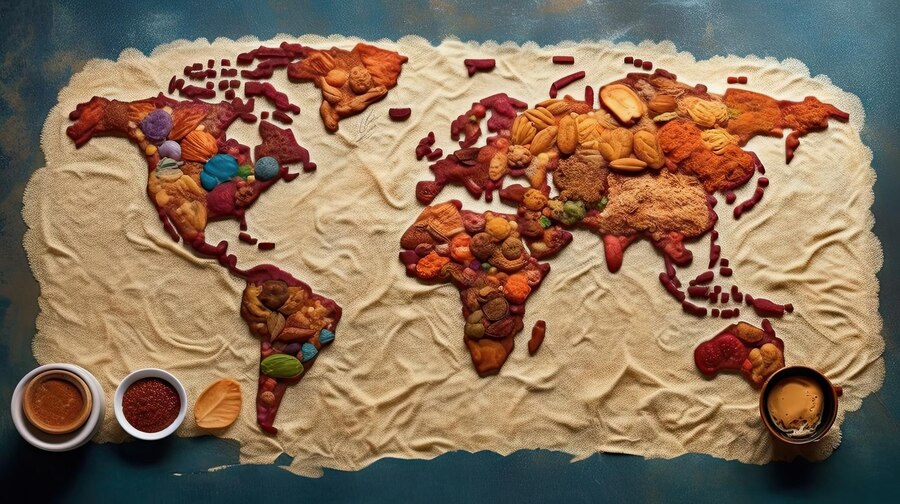

Error 404! PAGINA NU A FOST GASITA!

Unde s-a pierdut calatorul?
Hopaaa, se pare ca ne-am ratacit pe traseul virtual si am ajuns intr-o zona neexplorata a internetului. Nu e problema, chiar si calatorii experimentati ajung in locuri neasteptate uneori!
Zboara cu imaginatia in locurile minunate pe care le poti descoperi in Europa si alege o bucatarie unica pentru a-ti potoli pofta de aventura. Poti lua o gustare delicioasa si sa-ti umpli bateriile pentru a continua explorarea. In cazul in care va doriti sa va intoarceti la traseul principal, puteti utiliza bara de navigare pentru a gasi cele mai recente sfaturi si ghiduri de calatorie.
Echipa voastra virtuala de ghizi EuropeTravel.ro
INAPOI ACASA